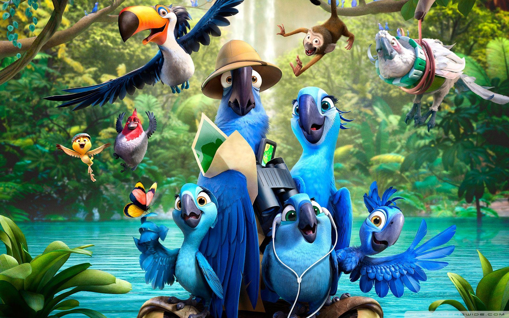
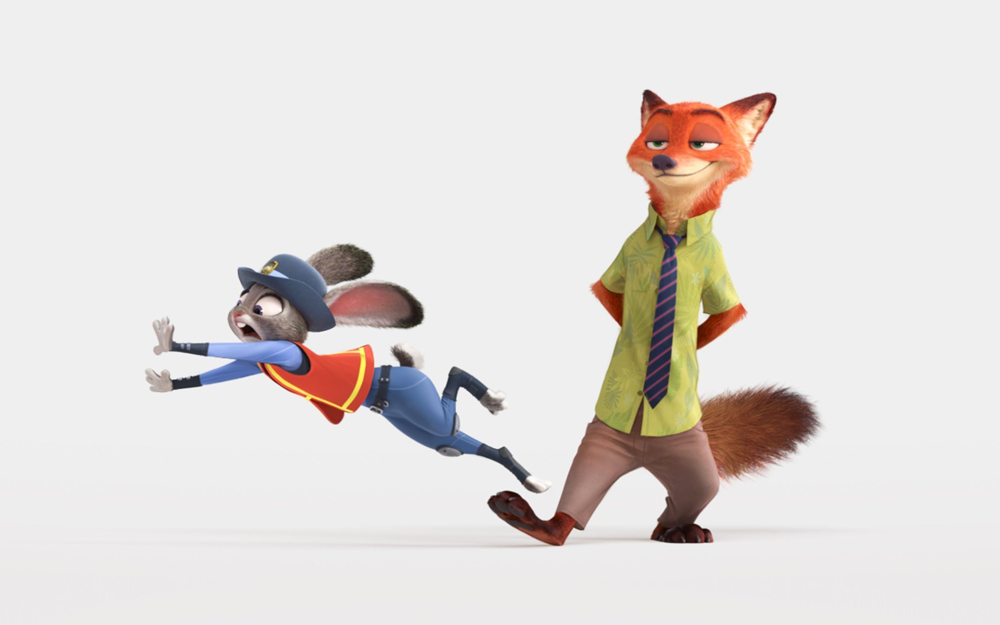
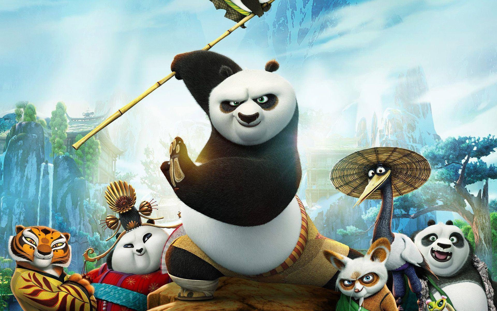
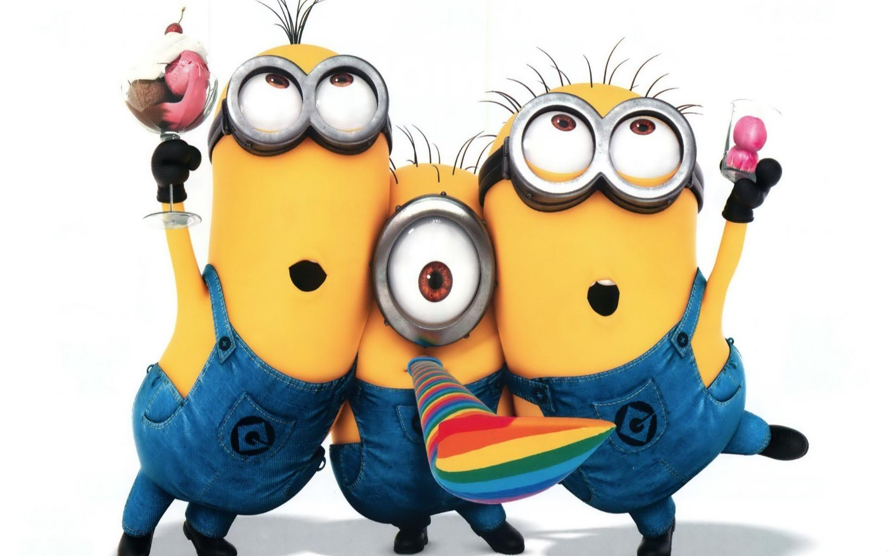
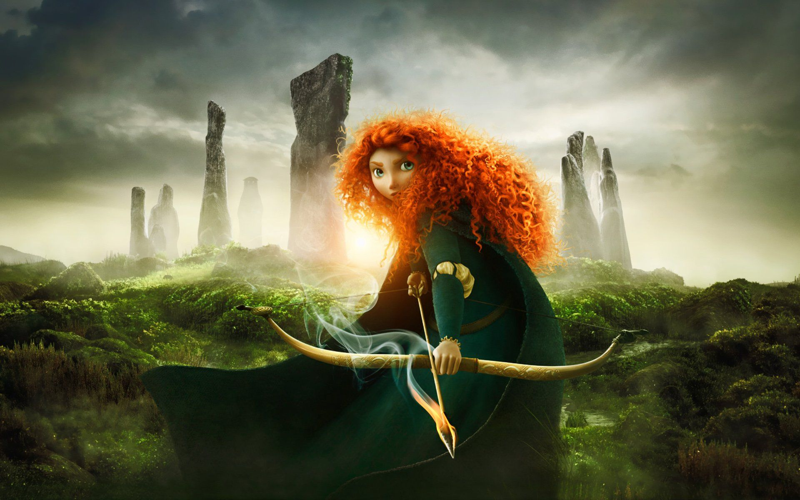

- By Disha Byakod
Animated movies have always manged to deliver amazing, beautiful and meaningful messages along with their super entertaining and creative stories here's my top 10 list of animated movies of all times.
Soul is a 2020 American film written and directed by Pete Docter. The film centers on a music teacher Joe Gardner seeking to reunite his soul and his body after they are accidentally separated, just before his big break as a jazz musician.A fabulous story about a near-death experience, with some conventional and some interestingly non-conventional statements about life and the afterlife. A movie on how one can get so involved in their work that they stop enjoying life and become lost soul
watch trailer
Up is a 2009 American computer-animated film directed by Pete Docter, and co-written by Bob Peterson. The film centers on elderly widower Carl Fredricksen (Asner) and Wilderness Explorer Russell (Nagai), who go on a journey to South America in order to fulfill a promise that Carl made to his late wife Ellie. Along the way, they meet a talking dog named Dug (Peterson), and encounter a giant bird named Kevin, who is being hunted by the explorer Charles Muntz (Plummer).
watch trailer
Inside Out is a 2015 American computer-animated film directed by Pete Docter, The film centers on a young girl named Riley (Dias) whose five personified emotions—Joy (Poehler), Sadness (Smith), Fear (Hader), Anger (Black), and Disgust (Kaling)—affect her life as she and her parents (Lane and MacLachlan) adjust to their new surroundings after moving from Minnesota to San Francisco.
watch trailer
Luca is a 2021 American computer-animated coming-of-age fantasy film produced by Pixar Animation Studios and distributed by Walt Disney Studios Motion Pictures. The film was directed by Enrico Casarosa. The film centers on Luca Paguro, a young sea monster boy with the ability to assume human form while on land, who explores the town of Portorosso with his new best friend, Alberto Scorfano, experiencing a life-changing summer adventure. Luca takes inspiration from Casarosa's childhood in Genoa; several Pixar artists were sent to the Italian Riviera gathering research from Italian culture and environment.
watch trailer

How to Train Your Dragon is a 2010 American computer-animated action fantasy film loosely based on the 2003 book of the same name by Cressida Cowell, produced by DreamWorks Animation and distributed by Paramount Pictures. The film was directed by Chris Sanders and Dean DeBlois The story takes place in a mythical Viking world where a young Viking teenager named Hiccup aspires to follow his tribe's tradition of becoming a dragon slayer. After finally capturing his first dragon, a Night Fury, and with his chance at last of gaining the tribe's acceptance, he finds that he no longer wants to kill the dragon and instead befriends it, even calling him Toothless.
watch trailer

Kung Fu Panda is an American media franchise by DreamWorks Animation. The franchise, set in a fantasy wuxia genre version of ancient China populated by anthropomorphic animals, features the adventures of Po Ping, a giant panda, who was improbably chosen as the prophesied Dragon Warrior. Although his status is initially doubted, Po proves himself worthy as he strives to fulfill his destiny and learn about his past with his new friends.
watch trailer
Raya and the Last Dragon (/ˈraɪ.ə/ RYE-ə) is a 2021 American computer-animated fantasy adventure film produced by Walt Disney Animation Studios.The film depicts a warrior princess who sought for the fabled last dragon, with hopes of restoring the dragon gem that would bring back her father and banish the evil spirits known as the Druun from the land of Kumandra.
watch trailer

"The Croods" are an eccentric family of cavemen, who survive the harsh terrain by living accordingly to a strict set of rules. But when their home is destroyed in the wake of an impending disaster known as "The End", they are forced to leave their home of shelter and security, and into the wilderness of the unknown to find a new home.
watch trailer
Moana (also known as Vaiana[4] or Oceania[5] in some markets) is a 2016 American 3D computer- animated musical adventure film produced by Walt Disney Animation Studios and distributed by Walt Disney Pictures.Moana Waialiki is a sea voyaging enthusiast and the only daughter of a chief in a long line of navigators. When her island's fishermen can't catch any fish and the crops fail, she learns that the demigod Maui caused the blight by stealing the heart of the goddess, Te Fiti. The only way to heal the island is to persuade Maui to return Te Fiti's heart, so Moana sets off on an epic journey across the Pacific. The film is based on stories from Polynesian mythology.
watch trailer
Zootopia (titled Zootropolis in various regions)[a] is a 2016 American computer-animated buddy cop film[6][7] produced by Walt Disney Animation Studios and released by Walt Disney Pictures. From the largest elephant to the smallest shrew, the city of Zootopia is a mammal metropolis where various animals live and thrive. When Judy Hopps becomes the first rabbit to join the police force, she quickly learns how tough it is to enforce the law. Determined to prove herself, Judy jumps at the opportunity to solve a mysterious case. Unfortunately, that means working with Nick Wilde, a wily fox who makes her job even harder
watch trailer